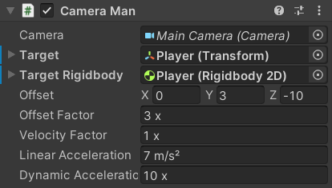

The CameraMan script is responsible for moving the Camera to follow the Player.

It has references to the Camera as well as the Player's Transform and Rigidbody2D:
public sealed class CameraMan : MonoBehaviour
{
[SerializeField]
[Tooltip("The camera this script is controlling")]
private Camera _Camera;
public ref Camera Camera => ref _Camera;
[SerializeField]
[Tooltip("The object this script is tracking")]
private Transform _Target;
public ref Transform Target => ref _Target;
[SerializeField]
[Tooltip("[Optional] The Rigidbody2D of the Target")]
private Rigidbody2D _TargetRigidbody;
public ref Rigidbody2D TargetRigidbody => ref _TargetRigidbody;
There are also various other fields to determine the way it moves with Units Attributes where appropriate:
[SerializeField]
[Tooltip("The position offset from the target to the camera")]
private Vector3 _Offset;
public ref Vector3 Offset => ref _Offset;
[SerializeField, Multiplier]
[Tooltip("Determines how much the distance from the camera to where it is supposed to be affects its velocity")]
private float _OffsetFactor = 1;
public ref float OffsetFactor => ref _OffsetFactor;
[SerializeField, Multiplier]
[Tooltip("Determines how much the velocity of the Target Rigidbody affects the velocity of the camera")]
private float _VelocityFactor = 1;
public ref float VelocityFactor => ref _VelocityFactor;
[SerializeField, MetersPerSecondPerSecond]
[Tooltip("The flat rate at which the camera accelerates")]
private float _LinearAcceleration = 1;
public ref float LinearAcceleration => ref _LinearAcceleration;
[SerializeField, Multiplier]
[Tooltip("The additional rate at which the camera accelerates in proportion to how far away its velocity is from the desired value")]
private float _DynamicAcceleration = 1;
public ref float DynamicAcceleration => ref _DynamicAcceleration;
The OnValidate method ensures that all fields have valid values and if there is no _Target it tries to find an object with the "Player" tag:
#if UNITY_EDITOR
private void OnValidate()
{
gameObject.GetComponentInParentOrChildren(ref _Camera);
if ((_Target == null || _TargetRigidbody == null) && !UnityEditor.EditorUtility.IsPersistent(this))
{
var target = GameObject.FindGameObjectWithTag("Player");
if (target != null)
{
if (_Target == null)
_Target = target.transform;
target.GetComponentInParentOrChildren(ref _TargetRigidbody);
}
}
PlatformerUtilities.NotNegative(ref _VelocityFactor);
PlatformerUtilities.NotNegative(ref _OffsetFactor);
PlatformerUtilities.NotNegative(ref _LinearAcceleration);
PlatformerUtilities.NotNegative(ref _DynamicAcceleration);
It also applies the _Offset value to its position so that you can immediately see where it will be when making changes in the scene:
if (_Target != null)
{
if (_Offset == default)
_Offset = transform.position - _Target.position;
else
transform.position = _Target.position + _Offset;
}
}
#endif
Since the Transform is used frequently, it is stored in a field on startup to improve performance:
private Transform _Transform;
private void Awake()
{
_Transform = transform;
}
The main movement operations are performed in LateUpdate.
It has an [ExecuteAlways] attribute and #if UNITY_EDITOR block to run in Edit Mode:
- If you modify the position of its
Transformcomponent, it will update its_Offsetfield accordingly (the opposite ofOnValidate). - If the
_Targetis moved, theCameraManwill automatically follow it.
[ExecuteAlways]
public sealed class CameraMan : MonoBehaviour
{
...
private Vector3 _Velocity;
private void LateUpdate()
{
if (_Target == null)
return;
var position = _Transform.position;
var destination = _Target.position + _Offset;
#if UNITY_EDITOR
if (!UnityEditor.EditorApplication.isPlayingOrWillChangePlaymode)
{
if (UnityEditor.Selection.Contains(gameObject))
{
_Offset = position - _Target.position;
}
else
{
_Transform.position = destination;
}
return;
}
#endif
The Target Rigidbody field is optional so it only gets the velocity if it has one:
var hasRigidbody = _TargetRigidbody != null;
var velocity = hasRigidbody ? _TargetRigidbody.velocity : default;
If the position the camera is trying to reach is off-screen, it teleports the camera to it immediately instead of moving all the way over gradually:
var screenPosition = _Camera.WorldToScreenPoint(destination);
if (screenPosition.x < 0 ||
screenPosition.y < 0 ||
screenPosition.x > Screen.width ||
screenPosition.y > Screen.height)
{
_Transform.position = destination;
_Velocity = velocity;
return;
}
That happens if the Target is teleported far away or can also happen if they fall for too long.
The desired velocity the camera wants to be moving at is calculated using the _OffsetFactor and _VelocityFactor fields:
var targetVelocity = (destination - position) * _OffsetFactor;
if (_VelocityFactor > 0)
targetVelocity += (Vector3)(velocity * _VelocityFactor);
Then the current _Velocity is moved towards that value according to the _LinearAcceleration and _DynamicAcceleration:
var deltaTime = Time.deltaTime;
_Velocity = Vector3.MoveTowards(_Velocity, targetVelocity, _LinearAcceleration * deltaTime);
_Velocity = Vector3.LerpUnclamped(_Velocity, targetVelocity, _DynamicAcceleration * deltaTime);
And finally, the _Velocity is added to the position and applied to the `Transform:
position += _Velocity * deltaTime;
_Transform.position = position;
}
}